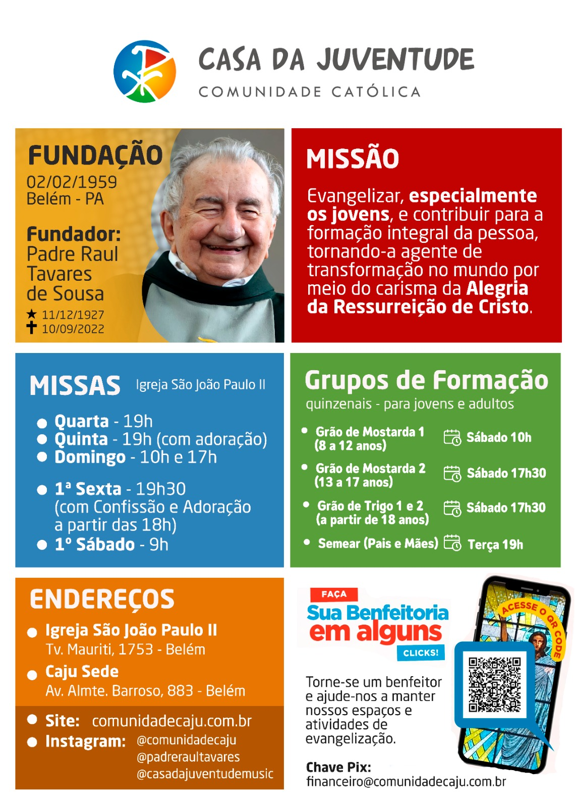
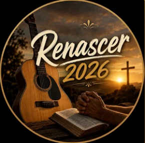

Nossa comunidade
O que começou no retiro continua na amizade e na partilha.
O retiro foi o começo
A Casa 7 nasceu da experiência compartilhada no Renascer Belém 2026. Este espaço foi criado para preservar os laços de amizade, incentivar a oração e facilitar nossos próximos encontros.
Queremos uma comunidade leve, acolhedora e aberta à participação voluntária de quem viveu essa caminhada.
Conversar com o grupoCasa da Juventude
Conheça a história, a missão, os horários de missa e os grupos de formação da comunidade que acolhe nossa caminhada.
Toque no informativo para abrir a imagem completa e consultar todos os horários e endereços.
Ver informativo completo
Galeria da Casa 7
Nossa caminhada organizada por encontros. Toque em uma foto para ampliar.
Renascer 2026
Momento de Oração Pós-Renascer
Registros compartilhados pela comunidade. A publicação deve respeitar a autorização das pessoas fotografadas.
Vídeos da Casa 7
Momentos que guardam a alegria e a presença da nossa comunidade.

Nossa playlist
18 canções para continuar a experiência do Renascer.
Ouvir e escolher músicas